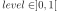
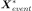
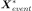
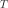
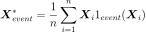
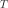
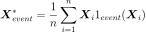
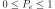
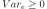

ProbabilitySimulationResult¶
-
class
ProbabilitySimulationResult(*args)¶ Probability simulation result.
Notes
Structure created by the method run() of a
EventSimulation, and obtained thanks to the method getResult().Examples
>>> import openturns as ot >>> ot.RandomGenerator.SetSeed(0) >>> limitState = ot.SymbolicFunction(['E', 'F', 'L', 'I'], ['-F*L^3/(3.*E*I)']) >>> # Enable the history mecanism in order to use the getImportanceFactors method >>> limitState = ot.MemoizeFunction(limitState) >>> myDistribution = ot.Normal([50.0, 1.0, 10.0, 5.0], [1.0]*4, ot.IdentityMatrix(4)) >>> output = ot.CompositeRandomVector(limitState, ot.RandomVector(myDistribution)) >>> myEvent = ot.Event(output, ot.Less(), -3.0) >>> myLHS = ot.LHS(myEvent) >>> myLHS.run() >>> SimulationLHSResult = myLHS.getResult() >>> print(SimulationLHSResult.getImportanceFactors()) [X0 : 0.000722617, X1 : 0.635094, X2 : 0.275692, X3 : 0.0884917]
Attributes: thisownThe membership flag
Methods
drawImportanceFactors()Draw the importance factors. getBlockSize()Accessor to the block size. getClassName()Accessor to the object’s name. getCoefficientOfVariation()Accessor to the coefficient of variation. getConfidenceLength(*args)Accessor to the confidence length. getEvent()Accessor to the event. getId()Accessor to the object’s id. getImportanceFactors()Accessor to the importance factors. getMeanPointInEventDomain()Accessor to the mean point conditioned to the event realization. getName()Accessor to the object’s name. getOuterSampling()Accessor to the outer sampling. getProbabilityEstimate()Accessor to the probability estimate. getShadowedId()Accessor to the object’s shadowed id. getStandardDeviation()Accessor to the standard deviation. getVarianceEstimate()Accessor to the variance estimate. getVisibility()Accessor to the object’s visibility state. hasName()Test if the object is named. hasVisibleName()Test if the object has a distinguishable name. setBlockSize(blockSize)Accessor to the block size. setEvent(event)Accessor to the event. setName(name)Accessor to the object’s name. setOuterSampling(outerSampling)Accessor to the outer sampling. setProbabilityEstimate(probabilityEstimate)Accessor to the probability estimate. setShadowedId(id)Accessor to the object’s shadowed id. setVarianceEstimate(varianceEstimate)Accessor to the variance estimate. setVisibility(visible)Accessor to the object’s visibility state. -
__init__(*args)¶ Initialize self. See help(type(self)) for accurate signature.
-
drawImportanceFactors()¶ Draw the importance factors.
Warning
It is necessary to enable the history of the model to perform this analysis (see
MemoizeFunction).Returns: - graph :
Graph Importance factor graph.
See also
- graph :
-
getBlockSize()¶ Accessor to the block size.
Returns: - blockSize : int
Number of terms in the probability simulation estimator grouped together.
-
getClassName()¶ Accessor to the object’s name.
Returns: - class_name : str
The object class name (object.__class__.__name__).
-
getCoefficientOfVariation()¶ Accessor to the coefficient of variation.
Returns: - coefficient : float
Coefficient of variation of the simulated sample which is equal to
 with
with  the variance estimate and
the variance estimate and
 the probability estimate.
the probability estimate.
-
getConfidenceLength(*args)¶ Accessor to the confidence length.
Parameters: - level : float, 
Confidence level. By default, it is
 .
.
Returns: - confidenceLength : float
Length of the confidence interval at the confidence level level.
-
getEvent()¶ Accessor to the event.
Returns: - event :
Event Event we want to evaluate the probability.
- event :
-
getId()¶ Accessor to the object’s id.
Returns: - id : int
Internal unique identifier.
-
getImportanceFactors()¶ Accessor to the importance factors.
Returns: - importanceFactors :
PointWithDescription Sequence containing the importance factors with a description for each component.
See also
Notes
The importance factors
 are evaluated from the coordinates of
the mean point of event domain , mapped into the
standard space as follows:
are evaluated from the coordinates of
the mean point of event domain , mapped into the
standard space as follows:
where
 with  the iso-probabilistic transformation and the mean point
.
with  the iso-probabilistic transformation and the mean point
.Warning
This notion is only available if the history mecanism of the model is activated (see
MemoizeFunction).- importanceFactors :
-
getMeanPointInEventDomain()¶ Accessor to the mean point conditioned to the event realization.
Returns: - meanPoint :
Point Mean point in the physical space of all the simulations generated by the
EventSimulationalgorithm that failed into the event domain.
Notes
Warning
This notion is only available if the history mecanism of the model is activated (see
MemoizeFunction).- meanPoint :
-
getName()¶ Accessor to the object’s name.
Returns: - name : str
The name of the object.
-
getOuterSampling()¶ Accessor to the outer sampling.
Returns: - outerSampling : int
Number of groups of terms in the probability simulation estimator.
-
getProbabilityEstimate()¶ Accessor to the probability estimate.
Returns: - probaEstimate : float
Estimate of the event probability.
-
getShadowedId()¶ Accessor to the object’s shadowed id.
Returns: - id : int
Internal unique identifier.
-
getStandardDeviation()¶ Accessor to the standard deviation.
Returns: - sigma : float
Standard deviation of the estimator at the end of the simulation.
-
getVarianceEstimate()¶ Accessor to the variance estimate.
Returns: - varianceEstimate : float
Variance estimate.
-
getVisibility()¶ Accessor to the object’s visibility state.
Returns: - visible : bool
Visibility flag.
-
hasName()¶ Test if the object is named.
Returns: - hasName : bool
True if the name is not empty.
-
hasVisibleName()¶ Test if the object has a distinguishable name.
Returns: - hasVisibleName : bool
True if the name is not empty and not the default one.
-
setBlockSize(blockSize)¶ Accessor to the block size.
Parameters: - blockSize : int,

Number of terms in the probability simulation estimator grouped together.
- blockSize : int,
-
setEvent(event)¶ Accessor to the event.
Parameters: - event :
Event Event we want to evaluate the probability.
- event :
-
setName(name)¶ Accessor to the object’s name.
Parameters: - name : str
The name of the object.
-
setOuterSampling(outerSampling)¶ Accessor to the outer sampling.
Parameters: - outerSampling : int,

Number of groups of terms in the probability simulation estimator.
- outerSampling : int,
-
setProbabilityEstimate(probabilityEstimate)¶ Accessor to the probability estimate.
Parameters: - probaEstimate : float, 
Estimate of the event probability.
-
setShadowedId(id)¶ Accessor to the object’s shadowed id.
Parameters: - id : int
Internal unique identifier.
-
setVarianceEstimate(varianceEstimate)¶ Accessor to the variance estimate.
Parameters: - varianceEstimate : float, 
Variance estimate.
-
setVisibility(visible)¶ Accessor to the object’s visibility state.
Parameters: - visible : bool
Visibility flag.
-
thisown¶ The membership flag